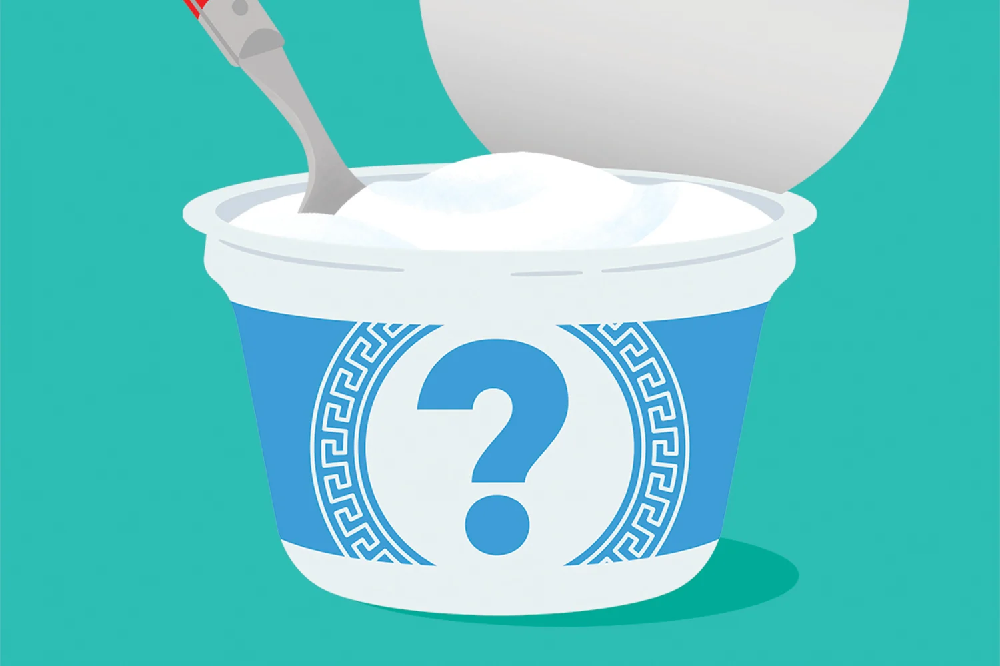

Рынок йогуртов — в числе наиболее конкурентных. Каждый год, иногда даже месяц, ассортимент увеличивается: появляются новые продукты и новые торговые марки. В гипермаркетах и супермаркетах регулярно можно видеть посетителей, медленно идущих вдоль холодильников в поиске чего-нибудь нового вкусного и полезного.
Если раньше производители йогуртов могли выиграть за счет лучшего предложения цены/качества, то сейчас среди продукции с приблизительно одинаковым качеством и ценой может выделиться только сильный бренд, то есть комплекс представлений, образов, ассоциаций и эмоций.
Йогурты, по мнению аналитиков, — самая динамичная в плане запуска новинок категория в современной молочной промышленности. Как ни парадоксально, по совместительству йогурт еще и один из старейших молочных продуктов.
В связи с тем, что на молочном рынке уверенно лидирует тренд здорового питания, производители стараются выпускать продукты с соответствующим позиционированием. При этом природа йогурта довольно двойственна. Продвижение йогуртов учитывает не только стремление аудитории к здоровому питанию, снижению сахара и заботе о пищеварении, но и человеческие слабости, желание побаловать себя.
Йогурт, это источник кальция, животного белка, калия, железа, витаминов А, С, группы В. Польза йогурта обусловлена наличием живых культур кисломолочных бактерий. Дело в том, что с возрастом количество полезных бактерий в организме человека уменьшается. Изменяется состояние и состав флоры кишечника. Постоянное употребление кисломолочных продуктов, помогает восстановить нормальную флору. Бифидобактерии являются частью микрофлоры кишечника человека и участвуют во многих важных процессах
Поддержав нас, вы принесете пользу себе и другим людям как потребителям. Каждая копейка поможет нам делать больше подобных проектов о разных видах продукции, что поможет вам выбирать с точностью интересующий вас продукт без боязни ошибиться в выборе не качественного товара.

Поддержать проекттелефон: 83-43-83
главный офис: Москва, ул.Петропалова, д.23| график работы: пн-сб 8:00 - 22:00 мск